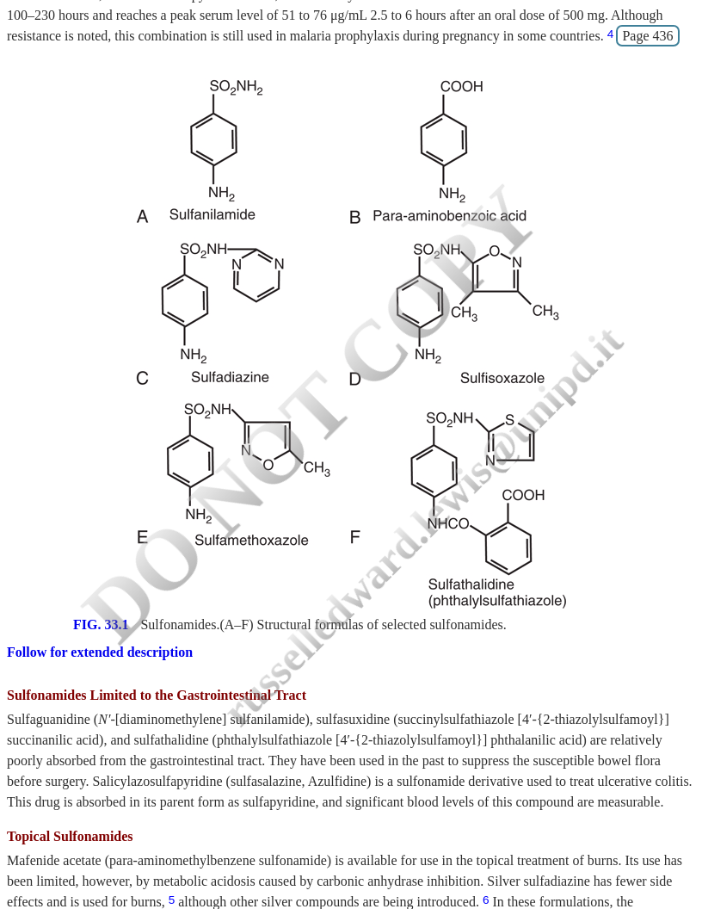
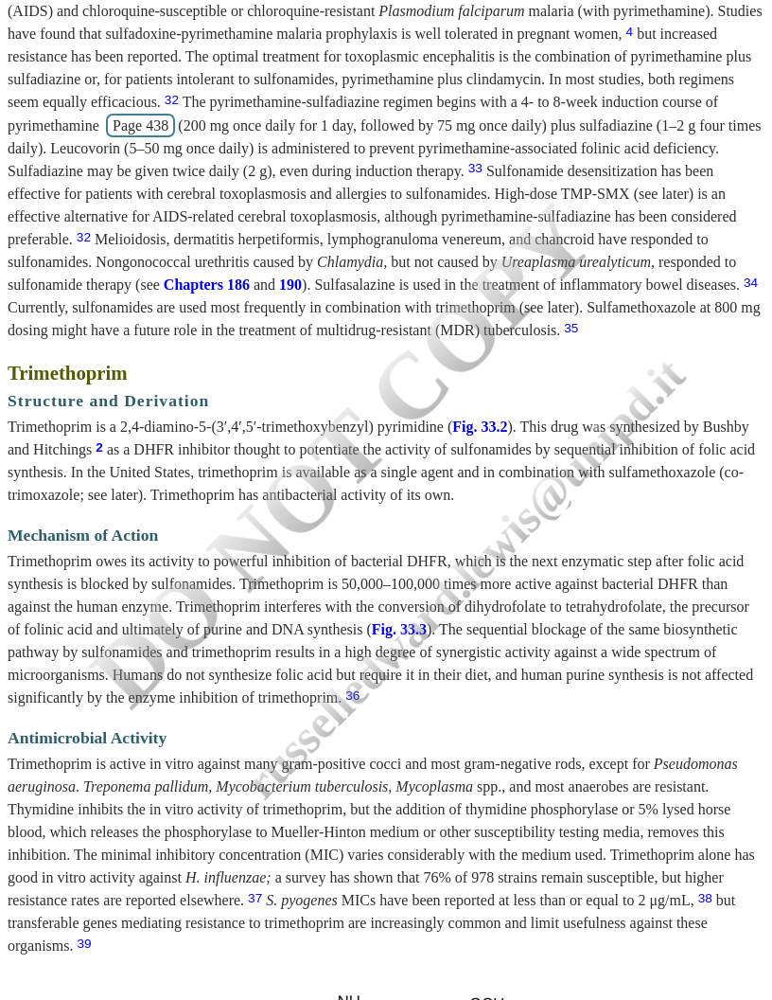

flowchart LR
A[PABA] -->|DHPS| B[Dihydrofolic acid]
B -->|DHFR| C[Tetrahydrofolic acid]
C --> D[Purines + DNA]
S[Sulfonamides] -.->|Block| A
T[Trimethoprim] -.->|Block| B
Chapter 33 — Antimicrobial Pharmacology
2026-02-03
By the end of this lecture, you should be able to:
| Decade | Development |
|---|---|
| 1930s | Basic sulfanilamide modifications |
| 1940s | Sulfadiazine for systemic infections |
| 1950s | Trimethoprim synthesis (Hitchings) |
| 1960s | TMP-SMX combination introduced |
| 1970s+ | Prophylaxis for opportunistic infections |
Key structural features:

Activity-enhancing modifications:
Activity-decreasing modifications:
| Class | Examples | Key Features |
|---|---|---|
| Short/medium-acting | Sulfisoxazole, SMX | Most common, systemic |
| Long-acting | Sulfadoxine | T½ 100-230 hrs, malaria |
| GI-limited | Sulfasalazine | Poorly absorbed, IBD |
| Topical | Silver sulfadiazine | Burns, wounds |

Folic acid synthesis pathway
Target: Dihydropteroate synthase (DHPS)
Target: Dihydrofolate reductase (DHFR)
flowchart LR
A[PABA] -->|DHPS| B[Dihydrofolic acid]
B -->|DHFR| C[Tetrahydrofolic acid]
C --> D[Purines + DNA]
S[Sulfonamides] -.->|Block| A
T[Trimethoprim] -.->|Block| B
Why synergy occurs:
| Property | Sulfonamide Alone | TMP Alone | TMP-SMX |
|---|---|---|---|
| Effect | Bacteriostatic | Bacteriostatic | Bactericidal |
| Inhibition | DHPS | DHFR | Both |
| Resistance | Higher risk | Higher risk | Lower risk |
Selective toxicity explained:
Tip
High doses or prolonged therapy can still cause folate deficiency - supplement with leucovorin when needed
Gram-positive:
Gram-negative:
| Organism | Activity | Clinical Use |
|---|---|---|
| Pneumocystis jirovecii | +++ | First-line |
| Toxoplasma gondii | ++ | Alternative |
| Nocardia spp. | +++ | First-line |
| Stenotrophomonas | +++ | First-line |
| Isospora/Cyclospora | +++ | First-line |
Resistance rates are increasing:
Warning
Always check local resistance patterns before empiric therapy!
Sulfonamide resistance:
Trimethoprim resistance:
Important
Cross-resistance between sulfonamides is common; resistance to one = resistance to all
| Parameter | TMP | SMX |
|---|---|---|
| Bioavailability | >90% | >90% |
| Tmax | 1-4 hr | 1-4 hr |
| Half-life | 8-10 hr | 9-11 hr |
| Protein binding | 45% | 70% |
| CSF penetration | 40-50% | 25-50% |
Fixed-dose combination:
Why this ratio?
Excellent penetration into:
Tip
Good CNS penetration makes TMP-SMX useful for: - Toxoplasmic encephalitis - Nocardia brain abscess
Trimethoprim:
Sulfamethoxazole:
| CrCl (mL/min) | Dose Adjustment |
|---|---|
| >30 | Full dose |
| 15-30 | 50% reduction |
| <15 | Avoid (or 50% q24h with monitoring) |
Hemodialysis: Give dose after dialysis
Warning
Monitor creatinine closely - TMP can increase serum creatinine by blocking tubular secretion (not true nephrotoxicity)
Gastrointestinal (most common):
Dermatologic:
Life-Threatening Reactions
Mechanism:
Risk factors:
| Potassium Level | Action |
|---|---|
| <5.5 mEq/L | Monitor |
| 5.5-6.0 mEq/L | Recheck, consider dose reduction |
| 6.0-6.5 mEq/L | Stop TMP-SMX, dietary K+ restriction |
| >6.5 mEq/L | Aggressive treatment, alternative antibiotic |
Tip
Check potassium within first week in high-risk patients!
Folate-related:
Prevention:
Much higher adverse reaction rates:
Despite reactions, TMP-SMX remains:
Avoid in Late Pregnancy
First trimester:
| Drug | Effect | Mechanism |
|---|---|---|
| Warfarin | ↑ INR | CYP2C9 inhibition |
| Methotrexate | ↑ Toxicity | Protein displacement, DHFR inhibition |
| Phenytoin | ↑ Levels | CYP2C9 inhibition |
| Sulfonylureas | ↑ Hypoglycemia | Protein displacement |
| Drug | Effect | Management |
|---|---|---|
| ACEi/ARBs | ↑ Hyperkalemia | Monitor K+ |
| Dofetilide | ↑ QT prolongation | Contraindicated |
| Cyclosporine | ↓ Levels | Monitor |
| Digoxin | ↑ Levels | Monitor |
Important
TMP-SMX + Dofetilide = Absolute contraindication
Pneumocystis jirovecii Pneumonia:
Prophylaxis indications:
Uncomplicated cystitis:
Pyelonephritis:
Warning
Check your local antibiogram! Many areas now have E. coli resistance >20%
Community-acquired MRSA:
Advantages:
First-line therapy:
Alternative: Imipenem, amikacin, linezolid
Often the only oral option:
Tip
Think about Stenotrophomonas in: - ICU patients on broad-spectrum antibiotics - Ventilator-associated pneumonia - Malignancy patients
| Infection | Dose | Duration |
|---|---|---|
| Toxoplasmosis | High-dose | 6+ weeks |
| Traveler’s diarrhea | 1 DS BID | 3-5 days |
| Isosporiasis | 1 DS QID | 10 days |
| Cyclosporiasis | 1 DS BID | 7-10 days |
| Listeria meningitis | High-dose IV | 3+ weeks |
| Indication | Dose | Frequency | Duration |
|---|---|---|---|
| PCP prophylaxis | 1 DS | Daily or 3x/wk | Indefinite |
| PCP treatment | 15-20 mg/kg TMP | Q6-8h | 21 days |
| Uncomplicated UTI | 1 DS | BID | 3 days |
| SSTI | 1-2 DS | BID | 5-10 days |
| Nocardiosis | 15 mg/kg TMP | Divided | 6-12 mo |
When to consider:
Rapid 8-hour protocol:
Absolute:
| Parameter | Timing | Notes |
|---|---|---|
| CBC | Baseline, periodically | Cytopenias |
| Creatinine | Baseline, week 1 | May ↑ from TMP |
| Potassium | Week 1 | High-risk patients |
| LFTs | If prolonged use | Hepatotoxicity |
| INR | If on warfarin | Interaction |
45-year-old man with HIV:
Question: What prophylaxis do you recommend?
TMP-SMX 1 DS tablet daily (or 3x weekly)
Key points:
28-year-old woman with uncomplicated cystitis:
Question: Is TMP-SMX appropriate?
No - local resistance too high
Better options:
Rule: TMP-SMX only if local resistance <20%
72-year-old man with cellulitis:
What’s the concern?
High hyperkalemia risk!
Risk factors present:
Management:
35-year-old HIV+ man on TMP-SMX prophylaxis:
Options?
Options to consider:
Red flags requiring immediate discontinuation:
68-year-old woman on warfarin for A-fib:
What happened?
TMP-SMX inhibits CYP2C9 → ↑ warfarin levels
Management:
Mechanism: Sequential blockade of folate synthesis (DHPS + DHFR)
Synergy: Combination is bactericidal; components alone are bacteriostatic
Spectrum: Broad, but NOT Pseudomonas or anaerobes
Resistance: Increasing; always check local patterns for UTIs
PCP: First-line for both treatment and prophylaxis
Adverse effects: Higher in HIV; watch for SJS/TEN, hyperkalemia
Drug interactions: Warfarin, methotrexate, ACEi/ARBs
Contraindications: Late pregnancy, severe renal/hepatic impairment, SJS history
Excellent choice for:
Think twice if:
Thank you for your attention!
Contact information: russ.e.lewis@gmail.com
Sulfonamides and Trimethoprim; TMP-SMX